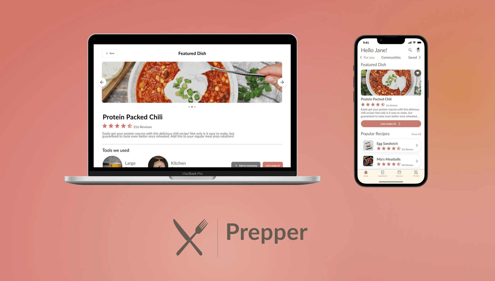
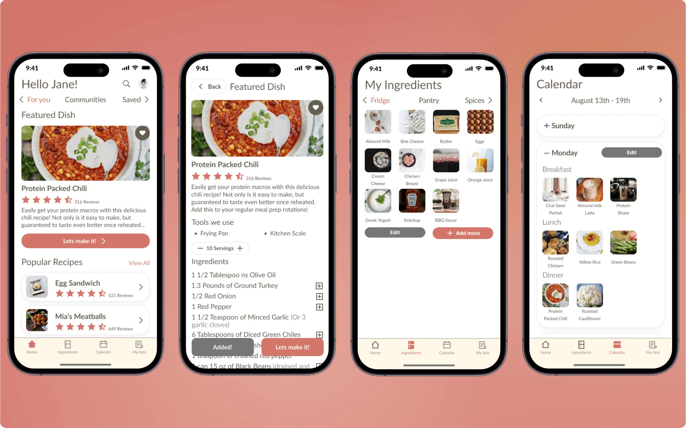
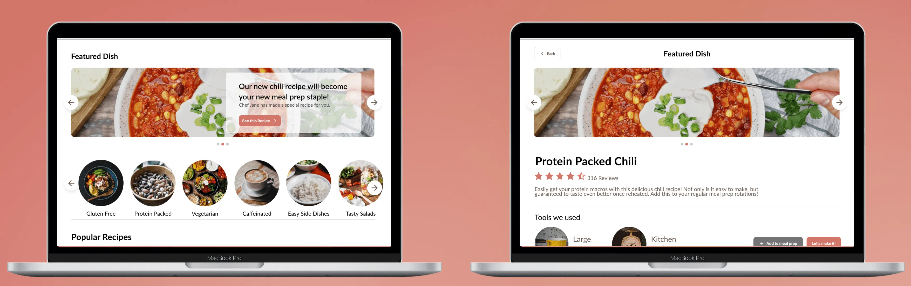
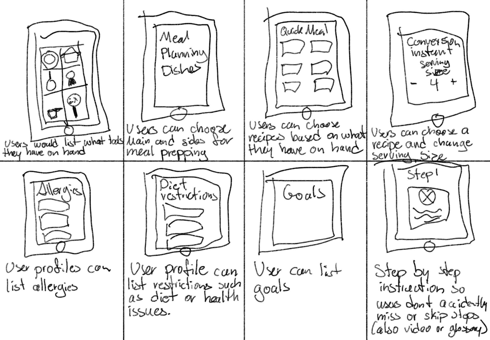
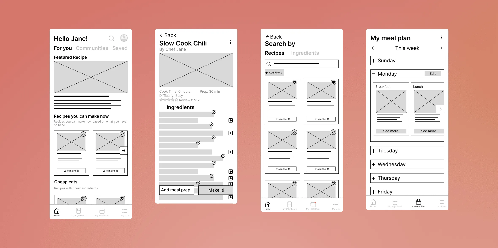
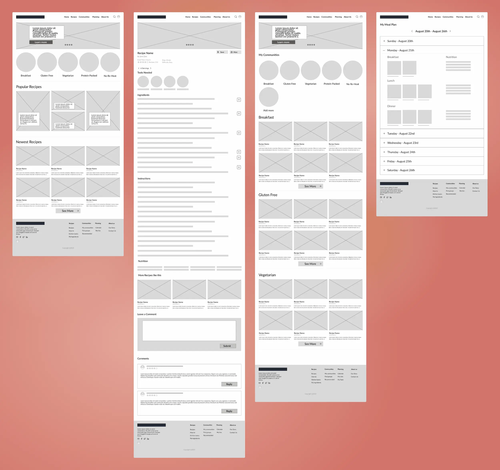

Prepper
Plan your meal preps.
Project Brief
I am the sole creator of Prepper. I ideated, researched, created UI, made wireframes, and prototyped for the mobile application and desktop version. I came up with the idea for Prepper while working on my Google UX Certification on Coursera.


User Persona
Emily is a 32 year old woman. She has Celiac's so she cannot have any gluten in her diet. She wants to make meals that would not only feed her, but she would enjoy making. She usually buys pre-made freezer meals but she wants to cook more often.
She works full-time and sometimes has to work long hours. She is interested in meal prep to save some time and energy.
Understanding the problem
Ideating & Brainstorming

I created a quick sketch using the “Crazy-Eights” exercise. Some solutions that I came up with were:
- List tools at hand.
- Choose main and sides for their meals.
- Choose recipes based on ingredients they already have.
- Change serving sizes of recipes.
- List allergies in user profile.
- Add diet restrictions.
- List goals.
- Step by step instructions while cooking.
Wireframes

I wanted the mobile wireframes to reflect more “on-the-go” and “quick” views of recipes and the calendar. Emily will be able to view and edit her meal preps when she has a quick break from work.

I created these desktop wireframes for the users that prefer to sit down and thoroughly plan their meals. Emily will be able to seamlessly look through recipes and join communities based on preferences. Desktop view will allow her to look at her weekly menu and see details such as nutritional facts.
Prototypes
Emily can now view and add recipes for her meal preps from her mobile phone. She can even view the featured recipe based on her preferences and restrictions. She can confidently view all the recipes knowing that it won't flare her Celiac's.
She can also plan her meals if she chooses to use her desktop computer. I also understand that while some users like to be able to use a larger screen when doing any form of planning.
Conclusion
I learned so much when it comes to wireframing and prototyping, I'm really pleased with the outcome. I would love to be able to build this application and website with a developer and be able to get feedback from established users.